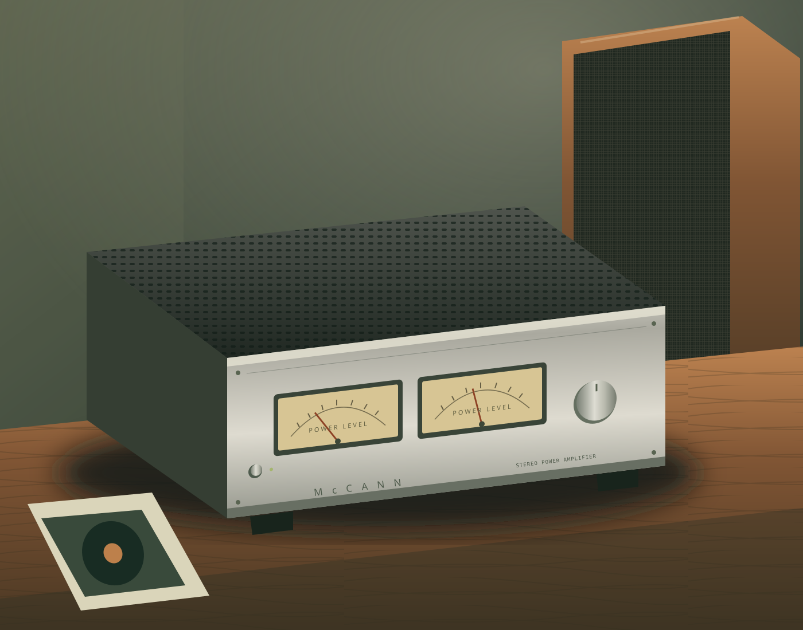

DESIGN CONCEPT
WALNUT / HORN LOADING
DaveHorns
A folded-horn lower cabinet and a separate upper module. A custom design from the workshop notebook.
DAVE McCANN’S PERSONAL WORKSHOP
Vintage amplifiers. Walnut cabinets.
The satisfaction of making things work again.
Collected with curiosity.
Kept for the next listen.

01 / THE COLLECTION
Power amps, heritage speakers, and the hardware in between. A selected archive from the McCann Home Audio inventory.
Selected records · July 18, 2026 baseline
Illustrations show equipment types, not exact model appearances.
02 / ON THE WORKBENCH
One place for the symptom, the parts, and what happened next. Open a project to keep your own checklist and notes.
Notebook saves in this browserProject references span January–November 2026. Completion is unconfirmed.
03 / FROM THE WORKSHOP
Some projects start with a circuit.
Others start with a piece of walnut.
WALNUT / HORN LOADING
A folded-horn lower cabinet and a separate upper module. A custom design from the workshop notebook.
SOLID WALNUT / OPEN BAYS
Two bays. Stacked shelves. Open front and back. A rack designed around the equipment it holds.
A PERSONAL PURSUIT
I’m Dave McCann. This is a home for my audio collection, restoration projects, and the things I build along the way.
Vintage solid-state amplifiers. Klipsch speakers. Real walnut. Practical research, good records, and the pleasure of hearing something work again.